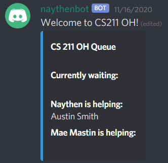

×

Discord Bot
This summer, I started writing a bot for a chatting service I use called Discord. I started by adding some simple features, like playing a game of Hangman and little commands such as one to randomly choose a choice from a list of given items. These were just fun little projects for my own enjoyment.
Most recently, I implemented a queueing system for use in my office hours for my teaching assistant job. This was the the first time I had gotten to use my bot for a real application, and I really enjoyed it. It works for any number of TAs and students and shows the status of the queue in a nicely formatted embed.
This was all written using the discord.py module. I hope to extend and add more functionality here in the future.
GitHub repository: